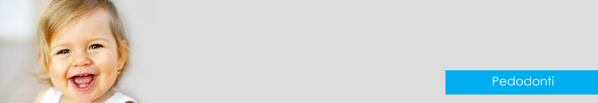

Pedodonti (Çocuk Diş Tedavisi)

Çocuk Dişleri Tedavisi
Çocuklar küçüklüklerinden itibaren diş doktoruna kontrole gitmeye alıştırılmalıdır. Anne-babasıyla birlikte diş doktoruna gitmeye alışkın çocuklara herhangi bir tedavi gerektiğinde çok daha rahat koltuğa oturarak gerekli müdahaleleri rahatça yaptıracaklardır.
Çocukluk çağlarından itibaren koruyucu diş hekimliği uygulamaları günümüzde önem kazanmaya başlamıştır. Daha çürükler oluşmadan önce aileler bilinçlendirilerek bu konuda aydınlatılmalıdır. Bebeklik çağından başlayarak çocukların beslenmelerinde dikkat edilecek konularla başlayarak,bebek ve çocuklarda ağız bakımının nasıl sağlanacağı öğretilmelidir. Bazen derinleşen çürükler bebeğe acı da verebilir. Bu durumda tedavi uygulamak çok zor olabilmektedir. Derinleşen çürüklerin temizlenmesi esnasında rahatsız olması halinde ya tedavi yarım kalmakta, ya da sedasyon denilen yöntemlerle genel anestezi benzeri bir uygulamayla tüm çürükler bir seferde doldurulmaktadır. Tabi çürüklerin oluşmaması için gereken önlemleri almak daha doğrudur. Kişisel ağız hijyenlerini nasıl sağlayacakları öğretilen çocukların günlük olarak bu işlemleri tekrarlamaları kontrol edilmeli, yanlışları, eksikleri düzeltilmeli ve belirli aralıklarla diş kontrolüne getirilmelidir.
İlk randevuyu alırken yapılması gerekenler
Çocuğunuzun ilk randevusunun, kliniğin en sakin olduğu zaman ve ortamnda gerçekleşmesi için dikkat gösteriniz. Hekiminizi aradığınızda bunun ilk randevu olacağını belirtmeniz, eğer önceden yaşanmış kötü bir tecrübe var ise, bununla ilgili detaylı bilgiyi de aktarmayı unutmamanız gerekir. Çocuğunuzun yaşı ve problemi hakkında kısa bir açıklama hekimin işini kolaylaştıracaktır.
Ne zaman getirmeli?
İki buçuk-üç yaş diş hekimiyle tanışmak için güzel bir yaştır. Çocuk artık etrafındaki kişilerle daha iyi iletişim kurmakta, oyuna dolayısıyla tedaviye daha rahat konsantre olmaktadır. Bu erken yaşın seçilmesinde bir başka neden de anne baba kontrolünden çıkmaya başladıkları bu yaşta travmaya (düşme, çarpma ve yaralanmalara) daha kolay uğramalarındadır. En istenmeyen şey parkta oynarken düşmüş ve dişini kırmış bir çocuğun korku acı ve panikle ilk kez bir diş hekimi ile karşılaşmasıdır. Bu tedaviyi güçleştirdiği gibi, çocukta ruhi olarak ikinci bir travmanın yaşanmasına neden olacaktır. Bu yaştaki bir çocukta ilk randevuyu takiben eğer herhangi bir çürük yoksa, ki ideali budur, koruyucu olarak alt ve üst çene topikal (yüzeysel) olarak flor uygulaması çocuğunuzun dişlerinin çürüğe karşı direncini arttırarak sağlıklı bir görünüm sağlanmasına yardımcı olacaktır. Oyunla öğretilecek basit bir diş fırçalama yöntemi bu alışkanlığın kazandırılmasındaki ilk adımdır.
Artık diş hekimi çocuklarınız için ara sıra uğranılması gereken bir aile dostu olacaktır.
Çocuklar küçüklüklerinden itibaren diş doktoruna kontrole gitmeye alıştırılmalıdır. Anne-babasıyla birlikte diş doktoruna gitmeye alışkın çocuklara herhangi bir tedavi gerektiğinde çok daha rahat koltuğa oturarak gerekli müdahaleleri rahatça yaptıracaklardır.
Çocukluk çağlarından itibaren koruyucu diş hekimliği uygulamaları günümüzde önem kazanmaya başlamıştır. Daha çürükler oluşmadan önce aileler bilinçlendirilerek bu konuda aydınlatılmalıdır. Bebeklik çağından başlayarak çocukların beslenmelerinde dikkat edilecek konularla başlayarak,bebek ve çocuklarda ağız bakımının nasıl sağlanacağı öğretilmelidir. Bazen derinleşen çürükler bebeğe acı da verebilir. Bu durumda tedavi uygulamak çok zor olabilmektedir. Derinleşen çürüklerin temizlenmesi esnasında rahatsız olması halinde ya tedavi yarım kalmakta, ya da sedasyon denilen yöntemlerle genel anestezi benzeri bir uygulamayla tüm çürükler bir seferde doldurulmaktadır. Tabi çürüklerin oluşmaması için gereken önlemleri almak daha doğrudur. Kişisel ağız hijyenlerini nasıl sağlayacakları öğretilen çocukların günlük olarak bu işlemleri tekrarlamaları kontrol edilmeli, yanlışları, eksikleri düzeltilmeli ve belirli aralıklarla diş kontrolüne getirilmelidir.
İlk randevuyu alırken yapılması gerekenler
Çocuğunuzun ilk randevusunun, kliniğin en sakin olduğu zaman ve ortamnda gerçekleşmesi için dikkat gösteriniz. Hekiminizi aradığınızda bunun ilk randevu olacağını belirtmeniz, eğer önceden yaşanmış kötü bir tecrübe var ise, bununla ilgili detaylı bilgiyi de aktarmayı unutmamanız gerekir. Çocuğunuzun yaşı ve problemi hakkında kısa bir açıklama hekimin işini kolaylaştıracaktır.
Ne zaman getirmeli?
İki buçuk-üç yaş diş hekimiyle tanışmak için güzel bir yaştır. Çocuk artık etrafındaki kişilerle daha iyi iletişim kurmakta, oyuna dolayısıyla tedaviye daha rahat konsantre olmaktadır. Bu erken yaşın seçilmesinde bir başka neden de anne baba kontrolünden çıkmaya başladıkları bu yaşta travmaya (düşme, çarpma ve yaralanmalara) daha kolay uğramalarındadır. En istenmeyen şey parkta oynarken düşmüş ve dişini kırmış bir çocuğun korku acı ve panikle ilk kez bir diş hekimi ile karşılaşmasıdır. Bu tedaviyi güçleştirdiği gibi, çocukta ruhi olarak ikinci bir travmanın yaşanmasına neden olacaktır. Bu yaştaki bir çocukta ilk randevuyu takiben eğer herhangi bir çürük yoksa, ki ideali budur, koruyucu olarak alt ve üst çene topikal (yüzeysel) olarak flor uygulaması çocuğunuzun dişlerinin çürüğe karşı direncini arttırarak sağlıklı bir görünüm sağlanmasına yardımcı olacaktır. Oyunla öğretilecek basit bir diş fırçalama yöntemi bu alışkanlığın kazandırılmasındaki ilk adımdır.
Artık diş hekimi çocuklarınız için ara sıra uğranılması gereken bir aile dostu olacaktır.